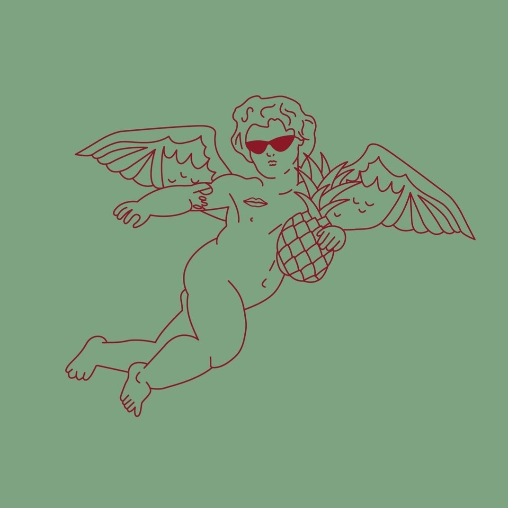
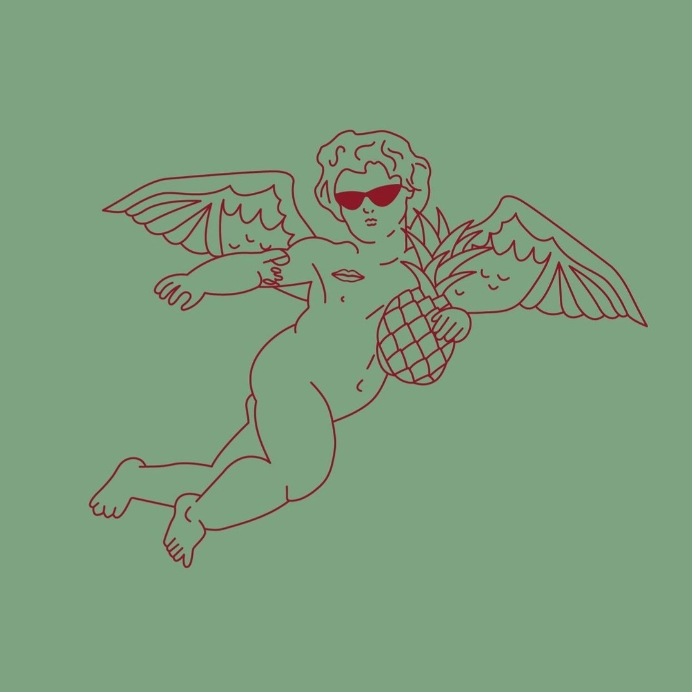
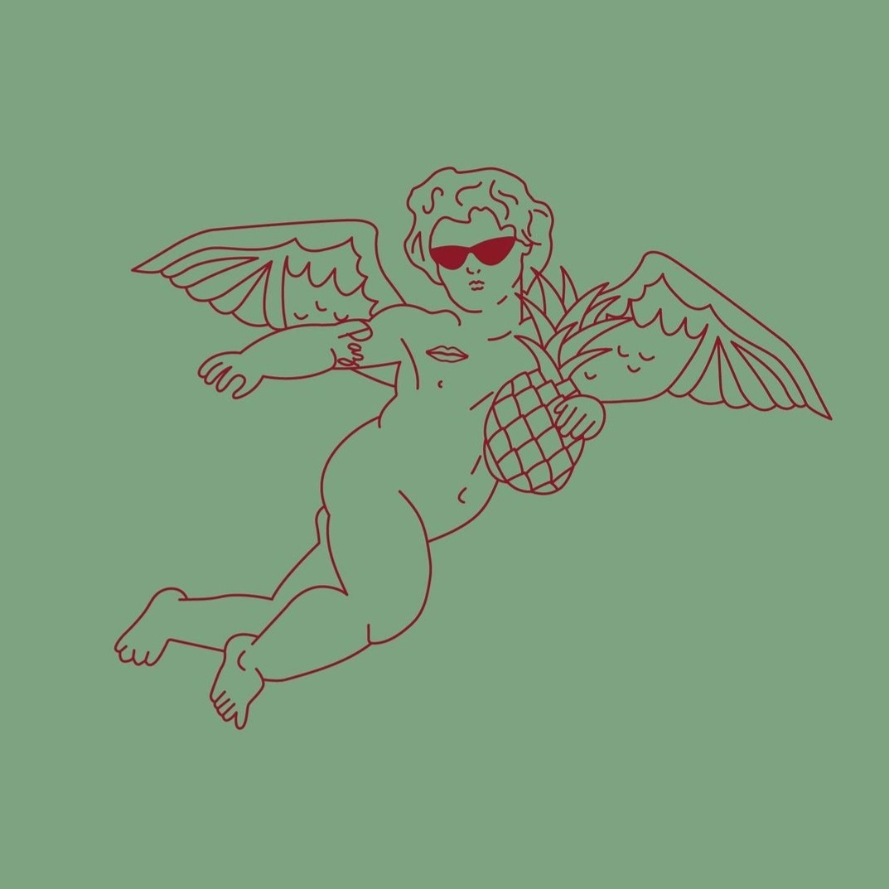

Descubrí Cafe Jazmin Chebar, el nuevo proyecto realizado junto a Narda Lepes, una gran amiga de la marca. Ubicados en una de nuestras esquinas en el corazón de Palermo Viejo encontras opciones de pastelería artesanal, almuerzo y café de especialidad.
